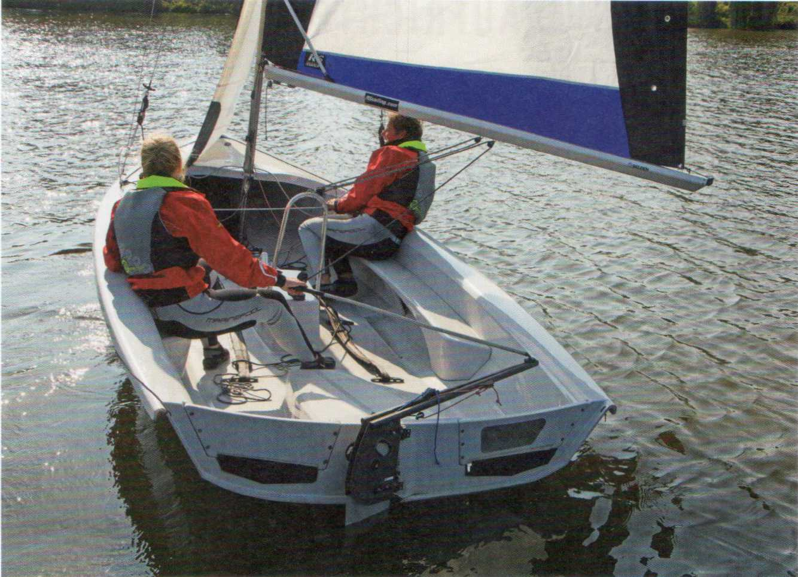

При штормовом предупреждении вообще не выходят в плавание, а ждут улучшения погоды. Визуальные или звуковые системы штормового предупреждения, которыми оборудованы некоторые акватории, сигнализируют о необходимости немедленно найти безопасную стоянку. Но не везде есть системы предупреждения, и приходится полагаться на собственное наблюдение за погодой. Особенно опасны, прежде всего на южных внутренних акваториях (Binnenrevieren), внезапные тёплые грозы. При первых признаках нужно попытаться добраться до более защищённого берега — того, за которым надвигается гроза. Но не всегда удаётся уйти от надвигающегося шторма. Что делать?
► 1-я мера: надеть спасательные жилеты (Rettungswesten).
► 2-я мера: взять рифы (Reffen). Если на швертботе (Jolle) это невозможно, убрать грот (Großsegel).
► 3-я мера: всё закрепить по-штормовому (seefest). На швертботе это означает всё уложить и привязать так, чтобы при опрокидывании (Kenterung) ничего не потерять.

Лежание в дрейфе (Beiliegen):
Под лежанием в дрейфе понимают удержание лодки под парусами относительно спокойно и контролируемо почти на месте. В шторм этот манёвр отлично подходит для пережидания порывов (Böen). При этом, однако, нужно всегда иметь достаточно места под ветром (Lee).
Перед лежанием в дрейфе — это окончательное положение — выполняют приведение к дрейфу (Beidrehen):
Экипаж (Crew) делает поворот оверштаг (Wende), но стаксель (Fock) не отдают, а оставляют задержанным на ветру (back). Грот должен быть полностью потравлен, он должен заполаскивать (killen) и стоять в ветровой тени стакселя. Рулевой (Steuermann) после поворота даёт руль на ветер (Luvruder), чтобы компенсировать дрейф (Abdrift) лодки под ветер.
Порыв (Bö) виден издалека по более тёмной ряби на воде. В порыве вымпельный ветер (scheinbarer Wind) отходит, потому что скорость ветра увеличивается. Вот как парируют порыв:
В бейдевинд (Am Wind): Полностью откренить (ausreiten) и кратко привестись (anluven) или потравить гика-шкот (Großschot), не давая ему выбежать.
► Сразу после прохождения порыва снова увалиться (abfallen) или выбрать гика-шкот. Иначе лодка может остаться в ветру, как минимум потеряет ход и, следовательно, устойчивость и будет беззащитна перед следующим порывом. А это означает почти верное опрокидывание (Kenterung).
На полных курсах (Raumschots): Дать контрруль (Stützruder) для компенсации приводящего момента (Luvgierigkeit) и потравить гика-шкот и/или слегка увалиться. Вес в корму.
► Не приводиться!
В фордевинд (Vor dem Wind): Слегка дать контрруль для компенсации приводящего момента, в остальном точно держать курс.
► Не давать контрруль слишком резко — это неизбежно приведёт к непреднамеренному повороту фордевинд (Patenthalse). Это может означать опрокидывание или поломку рангоута (Rigg).
Опасность непреднамеренного поворота фордевинд на курсе фордевинд присутствует всегда, но при сильном ветре она особенно велика. Поэтому для безопасности лучше идти несколько более полным курсом.